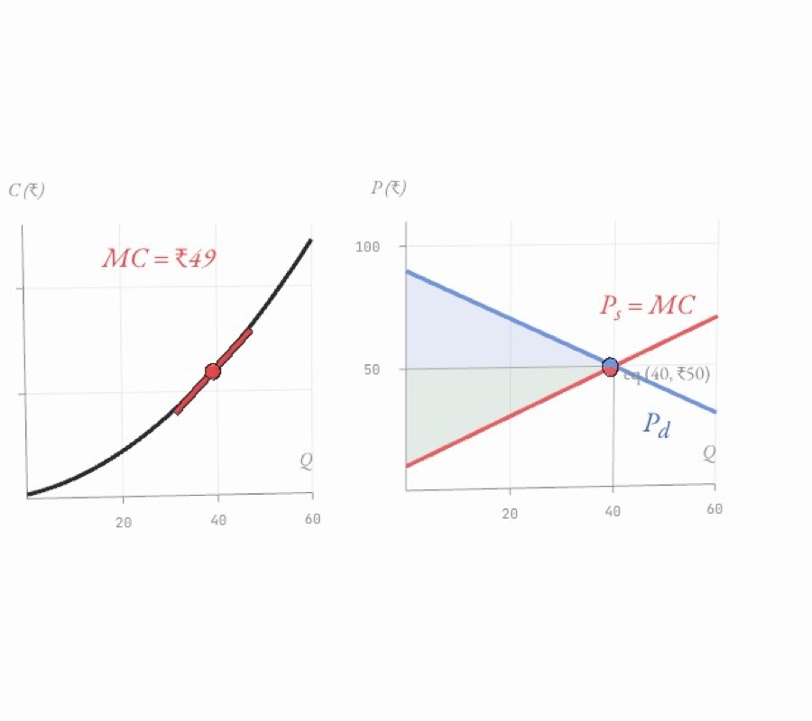
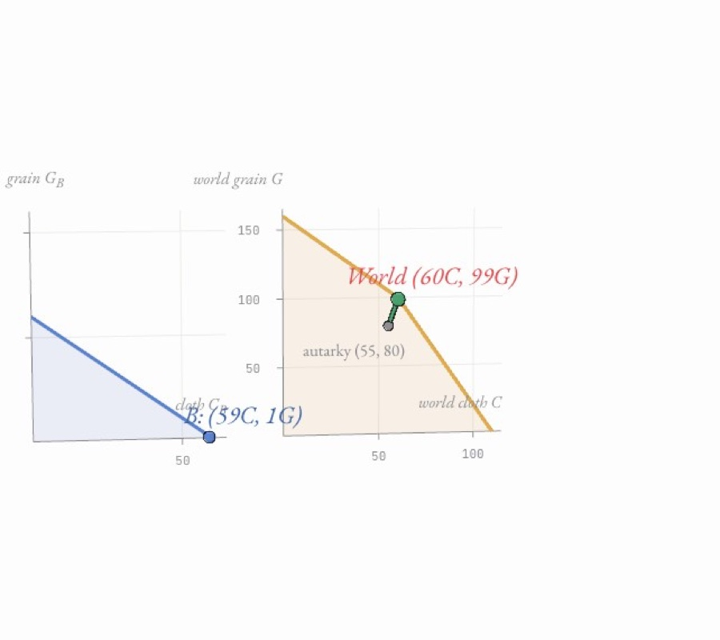
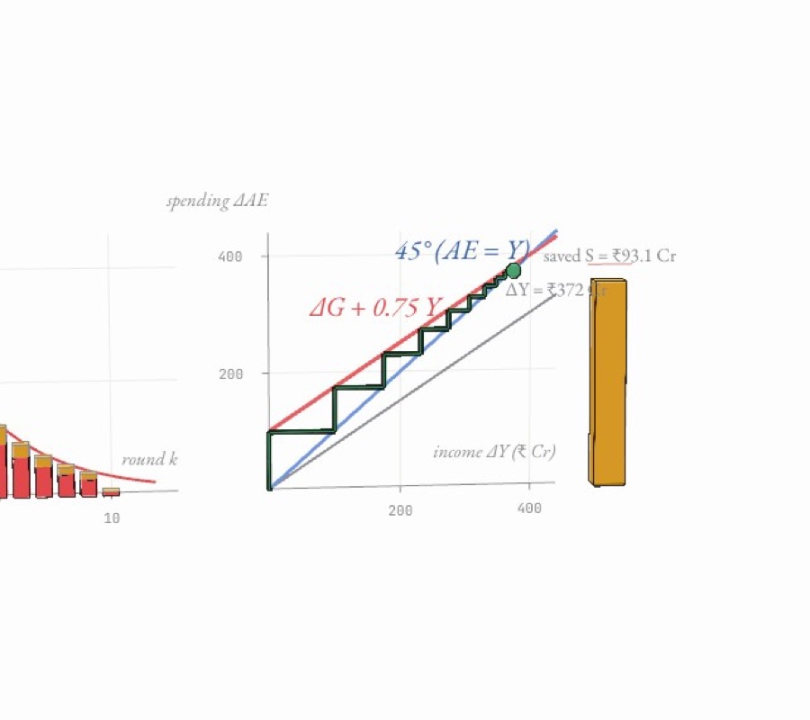

Atlas
Concepts
Economics, taken apart.
Money and markets as machines you can step through
Money and time
No. 01
machine
₹1,000 a month at 8 %
how interest earns interest
Microeconomics
No. 02
machine
Where supply meets demand
marginal cost, market clearing and surplus

Trade and production
No. 03
machine
Why trade helps even when one side is better at everything
opportunity cost, the PPF and comparative advantage

Macroeconomics
No. 04
machine
How ₹100 of spending becomes ₹400 of income
re-spending rounds, savings leakages and the Keynesian Cross
